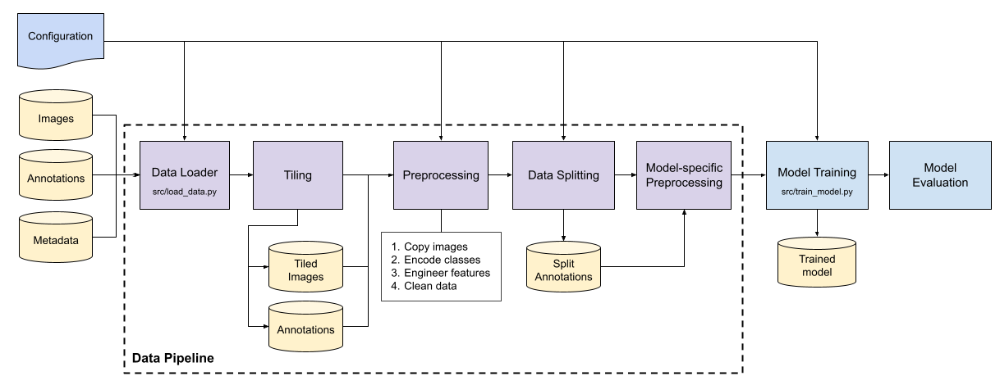
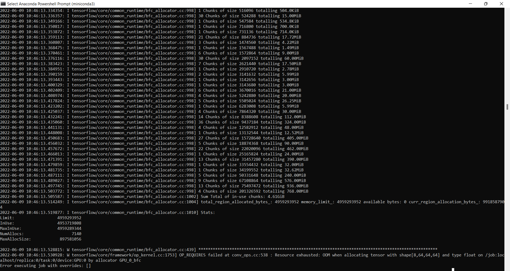

Please ensure that you have completed the "Environment Setup" guide before proceeding to follow this guide.
The diagram below shows the process flow of the model training module, which optionally includes the data pipeline.
The entrypoint of the training module is the script src/train_model.py by default. If the data pipeline is configured to run before training begins, the entrypoint would be src/load_data.py. Running the data pipeline is necessary only if there are changes or additions to the training dataset or if the data pipeline has never been run on the current training environment.

The main configuration file used to customise the AI engine is pipelines.yml, located in conf/life3 subfolder.
To configure and run the data pipeline, refer to the "Data Pipeline Setup" guide.
In pipelines.yml, the following parameters in the train section are configurable.
Constant (const.) |
Parameter | Type | Description | Default Value |
|---|---|---|---|---|
| LOAD_DATA | load_data | boolean | Determines whether to run the data pipeline process before training. Set to True if there is new data to be trained on. |
False |
| TRAIN_MODEL_NAME | model_name | str | Name of model to be trained | "efficientdet" |
| SAVE_WEIGHTS_ONLY | save_weights_only | boolean | Determines whether to save only model weights or the entire model. The latter option will result in a larger file size. | True |
| TRAIN_EARLY_STOPPING | early_stopping | boolean | Determines whether the early stopping mechanism is activated during training. | True |
| TRAIN_EARLY_STOP_PATIENCE | patience | int | Number of epochs to wait before early stopping is activated if there is no improvement in the metrics used to measure performance on the validation set. | |
| LR_SCHEDULER | lr_scheduler | str | The learning rate scheduler used by the model during training. For reduce_on_plateau, the learning rate will reduce by lr_reduce_factor (see below) if there is no improvement in model performance for 2 consecutive epochs. The number of consecutive epochs depends on lr_reduce_patience (see below). |
"reduce_on_plateau" |
| INITIAL_LR | initial_lr | float | Learning rate to start from. | 0.001 |
| LR_REDUCE_FACTOR | lr_reduce_factor | float | Factor by which the learning rate will be reduced. | 0.1 |
| LR_REDUCE_PATIENCE | lr_reduce_patience | int | Number of epochs with no improvement after which learning rate will be reduced. | 2 |
| LR_MIN_DELTA | lr_min_delta | float | Threshold for measuring the new optimum, to only focus on significant changes. | 0.001 |
| EVAL_BATCH_SIZE | eval_batch_size | int | The number of images from the validation set to be evaluated per batch. Recommended values: 4, 8, 16, or 32. | 8 |
| EVAL_IOU_THRESHOLD | eval_iou_threshold | list of float | The threshold used to consider when a detection is positive or negative. Possible values: 1. a single floating point number; or 2. 3 numbers representing lower boundary, upper boundary (inclusive) & number of evenly spaced values to generate, e.g. [0.5, 0.95, 10].For more stringent evaluation, use the latter option. |
[0.5] |
| EVAL_SCORE_THRESHOLD | eval_score_threshold | float | The score confidence threshold used for detections. A prediction with a score below this value is not considered a valid prediction. | 0.01 |
| EVAL_CELL_ACCU_AS_CELL | eval_cell_accu_as_cell | boolean | Determines whether the model treats cell accumulation annotations as cell during evaluation. The purpose of doing so is to evaluate the model less strictly, i.e. the model would score a true positive even if a cell prediction overlaps with a cell accumulation ground truth. |
False |
The implementation of EfficientDet is based on this open source GitHub project. See this README for more details.
Under the efficientdet section in pipelines.yml, the training-related hyperparameters that can be changed are as follows:
Constant (const.) |
Parameter | Type | Description | Default Value |
|---|---|---|---|---|
| TRAIN_ANNOTATIONS_PATH | train_annotations_path | str | Absolute or relative path pointing to the training data set to be used. | |
| VAL_ANNOTATIONS_PATH | val_annotations_path | str | Absolute or relative path pointing to the validation data set to be used during training. | |
| TEST_ANNOTATIONS_PATH | test_annotations_path | str | Absolute or relative path pointing to the test data set to be used during evaluation. | |
| SAVED_MODEL_PATH | snapshot-path | str | Absolute or relative path to directory where model snapshots are saved during training. | |
| None | gpu | int or str | ID of GPU device to be used. Only single GPU is supported by this EfficientDet implementation. | 0 |
| ED_TRAIN_BACKBONE | train_backbone | int | Compound coefficient used to scale up EfficientNet, the backbone network. Possible values: 0, 1, 2, 3, 4, 5, 6. | 0 |
| None | snapshot | str | Base model weights to start training from. If a filename is specified, the file must be in h5 format and exist in the location defined in snapshot-path. If 'imagenet' is specified, the base weights will be downloaded from https://github.com/Callidior/keras-applications/releases/. |
'imagenet' |
| None | compute_val_loss | boolean | Determines whether to compute validation loss during training, if a validation set exists. | True |
| None | weighted_bifpn | boolean | Determines whether EfficientNet backbone uses weighted BiFPN (bidirectional feature pyramid network). | True |
| None | freeze_bn | boolean | Determines whether the batch normalization layers of the backbone network are frozen during training. | False |
| None | freeze_backbone | boolean | Determines whether the weights of the backbone network are frozen during training. | False |
| None | random_transform | boolean | Determines whether EfficientDet's in-built data augmentation is activated during training. | False |
| None | batch_size | int | The number of images included in each batch during training. Recommended values: 2, 4, 8, 16. | 8 |
| None | epochs | int | Number of epochs to train. | 100 |
| None | steps | int | Number of steps per epoch. For example, if training on 4000 images with a batch size of 4, the number of steps should be 4000 / 4 = 1000. | 128 |
| ED_IMAGE_SIZES | image_sizes | list of int | Input image sizes in pixels used by each EfficientNet backbone (B0 to B6). Do not change. | [512, 640, 768, 896, 1024, 1280, 1408] |
| ANCHOR_BOX_RATIOS | anchor_box_ratios | list of float | Each float represents an aspect ratio (width/height) of the anchor box. The number of ratios can be increased beyond 3. Ratios should reflect the average shape of objects in the dataset, in order for the model to fit the anchor box to the ground truth bounding box. | [1, 0.5, 2] |
| ANCHOR_BOX_SCALES | anchor_box_scales | list of float | Each anchor box can have multiple scales. If 3 ratios and 3 scales are set, there will be a total of 3x3=9 anchor boxes at each anchor position in an image. This parameter may be changed to produce anchor boxes with more fine-grained scales, e.g. when you have large input images. | [0.4, 0.496, 0.625] |
Open Anaconda Prompt or Windows Powershell and change to your working directory, e.g. cd C:\ai_engine.
Activate the conda environment with the following command:
conda activate life3-biotech
conda env update --file life3-biotech-conda-env.yml
load_data is set to True in pipelines.yml:train:
load_data: True
...
cell class ONLY, in the data_prep section, comment out or remove the line 'cell accumulation': 1 as shown below. (In Python, a single-line comment is prefixed by the pound sign #.)data_prep:
...
class_map: {
'cell': 0,
# 'cell accumulation': 1
}
python3 -m src.train_model
or
python -m src.train_model
Open Anaconda Prompt or Windows Powershell and change to your working directory, e.g. cd C:\ai_engine.
Activate the conda environment with the following command:
conda activate life3-biotech-train
conda env update --file life3-biotech-conda-env-train-gpu.yml
python3 -m src.train_model
or
python -m src.train_model
You may see the following error if the GPU memory is insufficient to handle the number of training images.

In this case, reduce the batch size to a number that is a power of 2. For example, if the current batch size is 16, reduce to 8 and attempt to restart the training process.